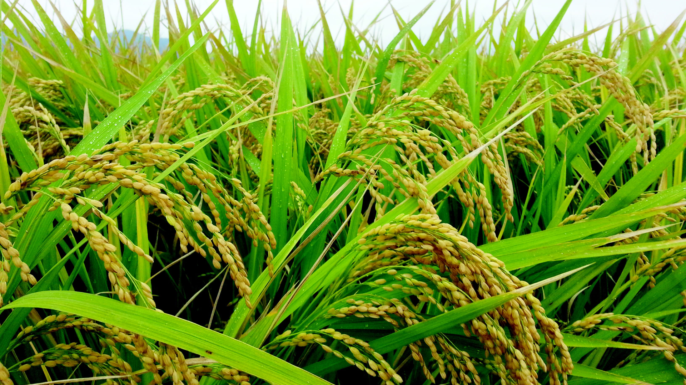
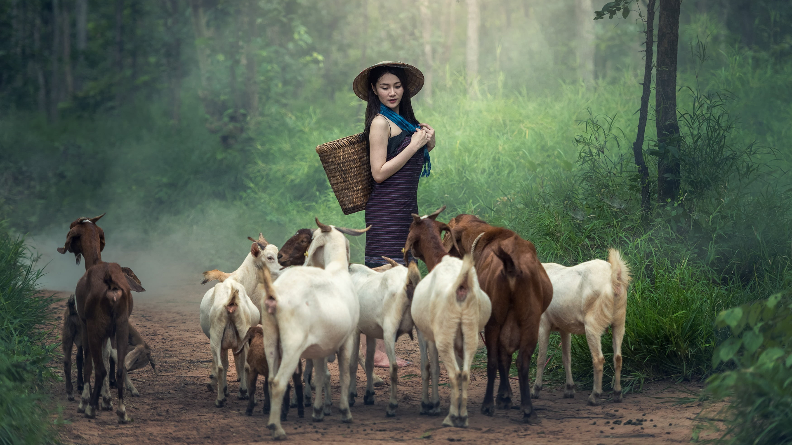
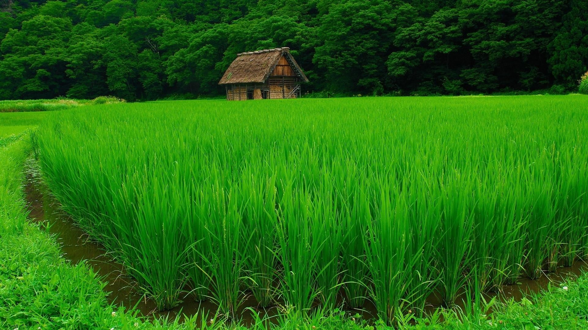

Pengertian Potensi Desa
Potensi desa adalah segala sumber daya alam dan sumber daya manusia yang dimiliki oleh Desa Pulosari, Kecamatan Telagasari, Kabupaten Karawang. Potensi ini menjadi modal utama dalam pembangunan desa, baik dalam sektor ekonomi, lingkungan, maupun sosial budaya.
Desa Pulosari memiliki kekayaan alam dan karakter masyarakat yang kuat, sehingga mampu mendukung pertumbuhan desa yang mandiri dan berkelanjutan.
Potensi Pertanian

Pertanian merupakan sektor penggerak utama perekonomian masyarakat Desa Pulosari. Dengan lahan sawah yang luas dan tanah yang subur, mayoritas penduduk menggantungkan hidup dari usaha pertanian—khususnya budidaya padi sebagai komoditas utama.
Sistem pertanian di Pulosari masih mempertahankan nilai-nilai tradisional, seperti gotong royong dalam panen dan pengairan sawah melalui saluran irigasi teknis maupun setengah teknis. Selain padi, sebagian masyarakat juga menanam palawija sebagai tanaman sela.
Potensi Peternakan

Selain pertanian, masyarakat Desa Pulosari juga mengembangkan sektor peternakan skala rumah tangga. Beberapa jenis ternak yang umum dipelihara adalah sapi, kambing, ayam kampung, dan bebek.
Meskipun masih dikelola secara konvensional, peternakan di desa ini memberikan kontribusi terhadap pendapatan keluarga serta menjadi bagian dari kearifan lokal dalam pemanfaatan limbah pertanian sebagai pakan ternak.
Potensi Wisata Alam

Keindahan alam Desa Pulosari menyimpan potensi wisata yang menjanjikan, terutama dalam bentuk wisata pedesaan dan agrowisata. Hamparan sawah yang hijau, lanskap desa yang tenang, serta suasana yang masih alami menjadi daya tarik tersendiri bagi pengunjung yang ingin merasakan ketenangan khas perdesaan Karawang.
Potensi ini dapat dikembangkan menjadi program wisata edukasi pertanian atau paket kunjungan berbasis budaya dan alam.